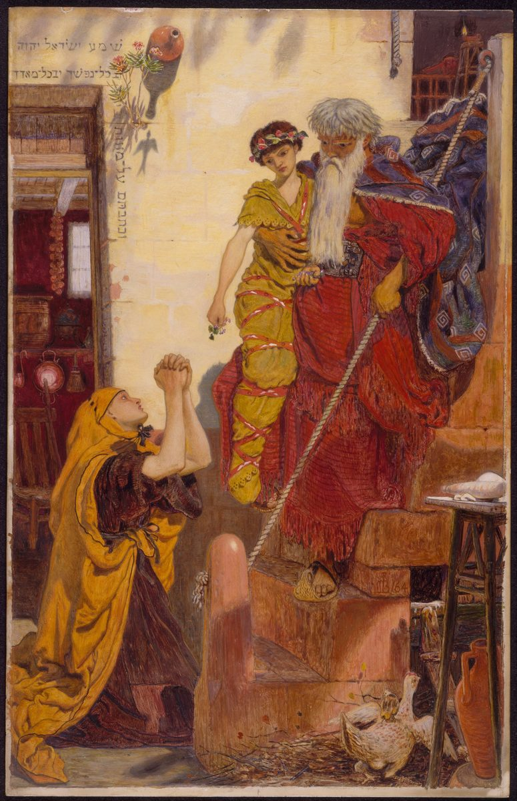

1 Kings 17 — The Mister Translation

1 Kings 17:23. Oil on panel. This is the moment Elijah brings the boy down from the upper chamber to his mother. The Hebrew on the wall gives phrases of the Shema, Deuteronomy 6. The verse says nothing of the wrappings, the wreath or the stair, and a Sidonian house with the Shema on its wall is the painter’s idea.

Translator's Notes — verse by verse
No introduction. The chapter opens on “And Elijah”, in the middle of Ahab’s reign, with no father and no call, and the only thing known of him is a place. His name is Eliyahu, “my God is Jehovah”, in a reign where the king has just built a house for Baal, and the verse leaves the reader to notice. This chapter never calls him a prophet. The Greek Bible in the Vaticanus tradition does, and it adds “of hosts” to the oath.
“Of the settlers of Gilead”. The Hebrew letters mtshby can be read two ways. The vowels of the Hebrew text give mi-toshavei, “of the settlers”, the word of Leviticus 25:23 (now on these pages). The Greek Bible in the Vaticanus tradition read a place, “of Thesbæ”. The ASV has “of the sojourners of Gilead”, the KJV “of the inhabitants of Gilead”, and the NWT 1984 “from the inhabitants of”. The NIV and the TLB have “from Tishbe in Gilead”, with the Greek. This page keeps the Hebrew as printed. The readings differ, and where Tishbe was is not known.
“Before whom I stand”. “As Jehovah the God of Israel lives” is the oath. Hold on to the word “lives”, because the chapter comes back to it. To stand before someone is what a courtier does: “your servants, who stand before you continually” (1 Kings 10:8, now on these pages). Elijah is standing before Ahab and says he stands before someone else. The ASV and the KJV have “before whom I stand”. The NIV has “whom I serve” and the TLB “the God whom I worship and serve”, which explain the phrase and lose the court.
⭐ “Except by my word”. The Hebrew, lefi devari, “at the mouth of my word”, stands in one verse of the Hebrew Bible. The NIV has “except at my word”, the NWT 1984 “except at the order of my word”, and the Douay “according to the words of my mouth”. No rain is what the law threatened, “he will shut up the heavens and there will be no rain” (Deuteronomy 11:17, now on these pages), and what Solomon prayed about at the dedication (1 Kings 8:35, now on these pages). Dew and rain together are David’s curse on Gilboa (2 Samuel 1:21, now on these pages). Baal was the storm god, and a drought is a strange thing to happen in his new house’s first years, though the verse does not say so. It does not say how long, either: “these years”. The word to Elijah comes in the third year (1 Kings 18:1, now on these pages), and Jesus and James say three years and six months (Luke 4:25; James 5:17, now on these pages). Josephus quotes Menander on a year without rain under Ethbaal of Tyre, which ended when the king prayed and “there came great thunders” (Antiquities 8.13.2, Whiston’s numbering). The chapter itself has an oath here, and no prayer for the drought.
The brook Cherith. The site is not known. “Before the Jordan” is al-penei, “on the face of”. The ASV and the KJV have “before”, the Geneva and the Douay “over against”, and the NIV and the NWT 1984 “east of”, which the order to turn eastward suggests and the phrase does not say. A nachal is a wadi, a stream that can stop. The NWT 1984 has “torrent valley”, the NIV “Ravine” for the place, and the Geneva “river”, which promises more water than verse 7 leaves.
“I have commanded the ravens to sustain you”. The verb is kilkel, what Solomon’s twelve officers did for the king (1 Kings 4:7, now on these pages). The king had a provision system, and the prophet has birds on the unclean list: “every raven of its own kinds” (Leviticus 11:15; Deuteronomy 14:14, now on these pages). It is the bird Noah sent out (Genesis 8:7, now on these pages), and the bird Jesus tells his hearers to consider (Luke 12:24, now on these pages). ⚠ The Hebrew letters orvim can also be pointed as “Arabs”, the ambiguity of 1 Kings 10:15 (now on these pages), and some readers have tried people in place of birds. That is reported here, and it is not the Hebrew as printed. The Greek Bible in the Vaticanus tradition and the shelf versions quoted here have ravens. The ASV and the KJV have “to feed thee”, the NIV “to supply you with food”, and the NWT 1984 “to supply you food”.
“Bread and flesh in the morning, and bread and flesh in the evening”. Israel in the wilderness had “in the evening flesh to eat and in the morning bread to the full” (Exodus 16:8, now on these pages). The Greek Bible in the Vaticanus tradition has exactly that shape here, loaves in the morning and flesh in the evening. The Hebrew gives Elijah both, twice a day. The ASV and the KJV keep “bread and flesh”, and the NIV and the NWT 1984 have “bread and meat”.
“The brook dried up”. The oath reaches the man who swore it. His own word has stopped his own water, and the chapter does not comment. Verse 1 has matar for rain and verse 7 has geshem, the word of the Flood (Genesis 7:12, now on these pages). This page has “rain” for both. The NWT 1984 marks the difference with “downpour”.
“Which belongs to Sidon”. The man who swore the drought is sent out of Israel, into the country of Jezebel’s father (1 Kings 16:31, now on these pages). This is the journey Jesus will use against his own town: “to none of them was Elijah sent — only to Zarephath of Sidon, to a woman who was a widow” (Luke 4:26, now on these pages). The Hebrew has two words for her. The NWT 1984 has “a woman, a widow”, and the KJV “a widow woman”. This page has “a widow”, with the ASV and the NIV. She is an almanah, the person the law keeps telling Israel to feed, and she has been told to feed a prophet.
“I have commanded a widow”. It is the verb of the ravens and the same sustaining. The birds obey. The woman, at the gate three verses later, shows no sign of having heard anything. The NIV has “I have directed”, the ASV and the KJV “I have commanded”, and the NWT 1984 “I shall certainly command”, which puts the order in the future and eases that problem.
“Gathering sticks”. The verb’s participle stands in four verses of the Hebrew Bible: here, verse 12, and the man who gathered sticks on the sabbath and died for it (Numbers 15:32–33, now on these pages). This scene at the town gate, a widow, “look”, a son who dies, is the one Luke is writing over at Nain (Luke 7:12, now on these pages). Elijah asks for water first, in a drought, and calls after her for bread. The ASV and the KJV have “a morsel of bread”, and the NWT 1984 “a bit of bread”.
“As Jehovah your God lives”. She takes the oath of verse 1 and changes its ending: “the God of Israel” becomes “your God”. The phrase stands in two verses of the Hebrew Bible, here and on the lips of Obadiah (1 Kings 18:10, now on these pages). “I have nothing baked” is ma’og. The word stands in two verses of the Hebrew Bible, and the other is an obscure line of Psalm 35:16, so the sense comes mostly from this context. The ASV and the KJV have “a cake”, the NWT 1984 “round cake”, and the NIV “any bread”. The jar is kad, Rebekah’s word (Genesis 24:14, now on these pages), and the jug is tsappachat, the one David took from Saul’s head (1 Samuel 26:11, now on these pages). The ASV has “the jar … the cruse”, the KJV and the Geneva “a barrel … a cruse”, and the NWT 1984 “the large jar … the small jar”.
⚠ “And we will eat it and die”. Two verbs, and she says them to a stranger as a plan. The Hebrew has two. The ASV, the KJV and the Douay have “two sticks”, and the NIV, the Geneva and the NWT 1984 have “a few”. The TLB has “die of starvation”, which is more than she says. The Greek Bible in the Vaticanus tradition has “my children” here and in verses 13 and 15, where the Hebrew has one son, and the story turns on that one son.
“Only make me … first”. “Do not fear” comes before the hardest request in the chapter. Ugah is the cake Sarah was told to make (Genesis 18:6, now on these pages). The ASV and the KJV have “a little cake”, the Douay “a little hearth cake”, and the NIV “a small loaf of bread”. He also says “do according to your word”, her word, in a chapter that keeps count of whose word is being done. The NWT 1984 has “do according to your word”, which this page follows, and the ASV and the KJV “do as thou hast said”.
“Shall not run out … shall not run short”. The second verb is the one of Moses’ “you have lacked nothing” (Deuteronomy 2:7, now on these pages). The promise is that the jar will not be empty. It does not say it will be full. The TLB has “there will always be plenty”, and the Hebrew has no plenty. “On the face of the ground” is adamah. The NWT 1984 has “the surface of the ground”, and the ASV and the KJV “upon the earth”. “Gives” is a reading: the written Hebrew and the read Hebrew differ by one letter (see ketiv / qere), and the translation follows the reading. The Greek Bible in the Vaticanus tradition has only “thus says the Lord”, without “the God of Israel”.
“She and he and her house, for days”. The written Hebrew has “he and she” and the reading tradition “she and he” (see ketiv / qere), and the translation follows the reading. The Douay has “he ate, and she”. The Hebrew says only yamim, “days”. The ASV and the KJV have “many days”, the Geneva “for a certain time”, and the NWT 1984 “for days”, which this page follows. Elijah “did according to the word of Jehovah” (verse 5), and she “did according to the word of Elijah”, and both are the same sentence.
“By the hand of Elijah”. “According to the word of Jehovah which he spoke by the hand of” closed the accounts of Ahijah, Jehu and Joshua (1 Kings 16:34, now on these pages), and now, within his first sixteen verses, it has Elijah’s name in it. The Geneva keeps “by the hand of Elijah”, the Douay has “in the hand of Elias”, and the ASV and the KJV “by Elijah”.
“No breath was left in him”. The word is neshamah, the breath of Genesis 2:7 and the “none that breathed” of 1 Kings 15:29 (now on these pages). The text never uses the word “dead” for him. Both his mother and Elijah speak of killing, and his soul comes back, so most readers take him to have died. The ASV and the KJV have “no breath left in him”, and the NIV “finally stopped breathing”. The TLB has “became sick and died”, and Josephus “gave up the ghost, and appeared to be dead” (Antiquities 8.13.3, Whiston’s numbering). “The mistress of the house” is ba’alat ha-bayit. The phrase stands in one verse of the Hebrew Bible, and it is the feminine of ba’al, owner. The woman with two sticks owns a house with an upper storey, and in Sidon’s country it is a woman who is the ba’al here. The NIV has “the woman who owned the house”.
“What to me and to you, man of God?” The phrase stands in four verses of the Hebrew Bible. It is the idiom of 2 Samuel 16:10, in the plural, and the Greek of it in the Vaticanus tradition is the Greek of John 2:4 (both now on these pages). The ASV and the KJV have “What have I to do with thee”, the NIV “What do you have against me”, and the TLB “what have you done to me”. She is the first to call him man of God, and she says it as a complaint. The NWT 1984 has “man of the [true] God”, with its brackets.
“To bring my guilt to mind”. The phrase stands in one verse of the Hebrew Bible. The word is avon. She names no sin, and neither does the text. Her fear is that a holy man in the house has drawn God’s eye to it. The KJV and the NIV have “my sin”, the NWT 1984 “my error”, and the Douay “my iniquities”. The Hebrew has no question mark here. The ASV has a statement, “thou art come unto me”, and so does the NWT 1984, “You have come to me”, and this page follows them. The KJV and the NIV make it a question.
⚠ Elijah’s question. Her bosom is the word of the two mothers (1 Kings 3:20, now on these pages), and “the upper chamber” is aliyah. The ASV has “the chamber”, the KJV “a loft”, and the NWT 1984 “the roof chamber”. Then he passes her accusation upward. Hare’ota, “have you brought evil”, is what Moses said to God: “why have you brought evil on this people?” (Exodus 5:22, now on these pages). The ASV and the KJV keep “brought evil”, the NIV has “brought tragedy”, the Geneva “punished”, and the TLB “why have you killed”. “With whom I am sojourning” is gur: the prophet is a resident alien in Sidon. The NWT 1984 has “residing as an alien”. The Greek Bible in the Vaticanus tradition has a different prayer, “Alas, O Lord, the witness of the widow”.
“He stretched himself out”. The verb vayitmoded stands in one verse of the Hebrew Bible. Its root is madad, to measure, and how it comes to mean this is uncertain. The Douay has “stretched, and measured himself”, and the ASV and the KJV “stretched himself”. The Greek Bible in the Vaticanus tradition has “he breathed on the child thrice”. Elisha’s gesture in the parallel story uses a different verb (2 Kings 4:34, now on these pages), and Paul falls on Eutychus (Acts 20:10, now on these pages). “Soul” is nefesh, which in Hebrew is the living self more than a passenger in the body. The ASV, the KJV and the NWT 1984 have “soul”, the NIV “life”, and the TLB “spirit”, which is a different Hebrew word.
“And Jehovah listened to the voice of Elijah”. Joshua 10:14 (now on these pages) said there was no day like the one when Jehovah listened “to the voice of a man”, and this is the same verb and the same noun. The ASV has “hearkened unto the voice of Elijah”, the KJV “heard the voice of Elijah”, and the NIV “heard Elijah’s cry”. The Greek Bible in the Vaticanus tradition has only “And it was so, and the child cried out”, with no soul returning. The readings differ. “And he lived” is one Hebrew word. If the boy had died, this is the first time in the Bible’s order that anyone comes back to life, and Kings tells it in one verse.
⭐ “See, your son lives”. This is where the word of verse 1 was going. Elijah swore “As Jehovah lives”, the widow swore “As Jehovah your God lives”, and the boy “lived”, and now Elijah takes the oath’s word and gives it to her son: chai binekh. “And gave him to his mother” is the sentence Luke copies word for word at Nain (Luke 7:15, now on these pages). The ASV and the KJV have “See, thy son liveth”. The TLB adds “he beamed”, which is not in the Hebrew.
“Now this I know”. Attah zeh yadati. The KJV has “Now by this I know”, the ASV “Now I know”, and the NWT 1984 “Now, indeed, I do know”. In verse 18 “man of God” was a complaint, and here it is a finding. “And the word of Jehovah in your mouth is truth” is emet, and mouth closes the chapter as it opened: Elijah swore “at the mouth of my word”, and the woman ends on the word in his mouth. The ASV and the KJV have “is truth”, the NWT 1984 “is true”, and the TLB has “that you are a prophet”, where the Hebrew does not. A woman of Sidon has said this before Israel has. The next chapter sends Elijah back to find out whether Israel will.
Patterns worth carrying forward
Where this translation keeps the words exact and distinct: “of the settlers of Gilead” for the Hebrew as printed; “before whom I stand”, the courtier’s phrase; “to sustain” for kilkel, of ravens and widow alike; “flesh”, as in Exodus 16; “two sticks”; “the jar” and “the jug” for kad and tsappachat; “for days”, with no “many”; “What to me and to you?”, as in 2 Samuel 16:10; “guilt” for avon; “brought evil”, as in Exodus 5:22; and “lives” every time, so that the oath and the boy are the same word. The written and read Hebrew are recorded at verses 14 and 15.
Echoes paid. “Except by my word” (1 Kings 16:34 note); the heavens shut (Deuteronomy 11:17; 1 Kings 8:35); dew and rain (2 Samuel 1:21); the courtier’s stance (1 Kings 10:8); to sustain (1 Kings 4:7); flesh and bread (Exodus 16:8, 12); the man gathering sticks (Numbers 15:32); the jug (1 Samuel 26:11); “by the hand of” (1 Kings 15:29; 16:12, 34); “brought evil” (Exodus 5:22); the voice of a man (Joshua 10:14); and, from the other end of the Bible, the pages that had already cited this chapter (Luke 4:25–26; 7:12–15; 12:24; James 5:17; Acts 20:10).
Echoes planted. The word in the third year (1 Kings 18:1, now on these pages); Obadiah’s “As Jehovah your God lives” (1 Kings 18:10, now on these pages); Elisha and the Shunammite’s son (2 Kings 4:34, now on these pages). The rest of Elijah’s story lies ahead, and 2 Kings 4 is now on these pages.
Next in this book: 1 Kings 18 — in the third year Elijah goes back to Ahab; Obadiah has hidden a hundred prophets from Jezebel; on Carmel Elijah asks Israel how long it will go limping on the two opinions, and the fire falls on one altar; and then, after three years, the rain.